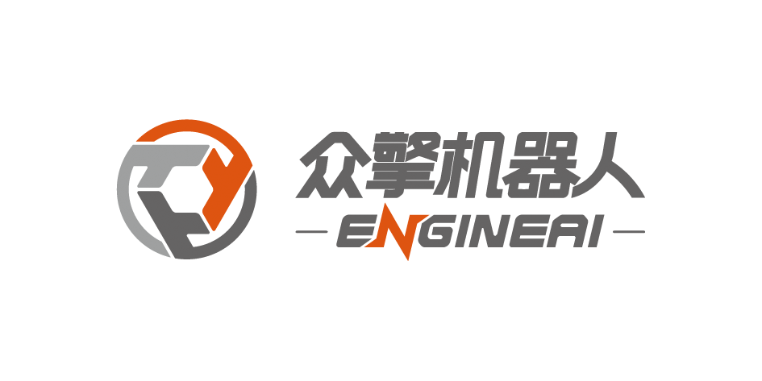
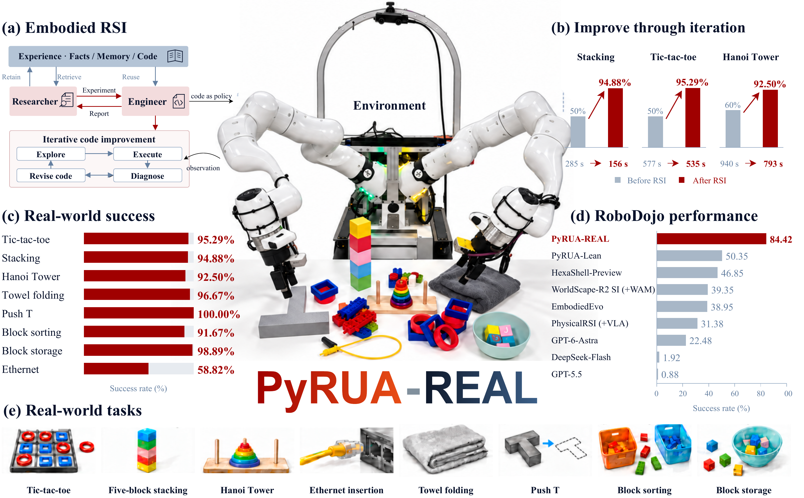

Robot Exploration and Adaptive Learning
through RSI in the Real World


Abstract
Coding agents powered by models such as GPT-6-Astra connect spatial reasoning with executable robot behavior, raising the question of how such agents can produce lasting improvements in robot capabilities from physical interaction. In this work, we study embodied recursive self-improvement (RSI) through real-world exploration, code refinement, and deployment using PyRUA-REAL, a framework in which coding agents retain interaction experience as persistent memory and reusable executable skills that inform subsequent exploration and improvement. Our empirical study places physical manipulation at the center of the improvement process, examining how agents collaborate, what kinds of execution feedback support effective code refinement, and how task specifications and previously acquired skills influence robustness and task transfer. We further investigate the efficiency and capability of the resulting programs when deployed without involving an online agent for decision-making. Across eight real-world tasks, PyRUA-REAL achieves an average success rate of 91.1%. In complementary evaluation on 42 tasks from the RoboDojo benchmark, it achieves an average success rate of 84.4%. This study provides empirical guidance for turning physical exploration into reusable robot skills that support continued improvement and robust, efficient deployment.

Structure
Result
Real world performance
Citation
@misc{wang2026pyruareal,
title = {{PyRUA-REAL}: Robot Exploration and Adaptive Learning through {RSI} in the Real World},
author = {Qiang Wang and Jianxin Bi and Shulong Jiang and Ruiyang Si and Wenbo Huang and Kaiqi Chen and Jiaxin Li and Liyun Li and Xuanyi Li and Daquan Zhou},
year = {2026},
eprint = {2611.06768},
archivePrefix = {arXiv},
primaryClass = {cs.RO},
url = {https://arxiv.org/abs/2611.06768}
}